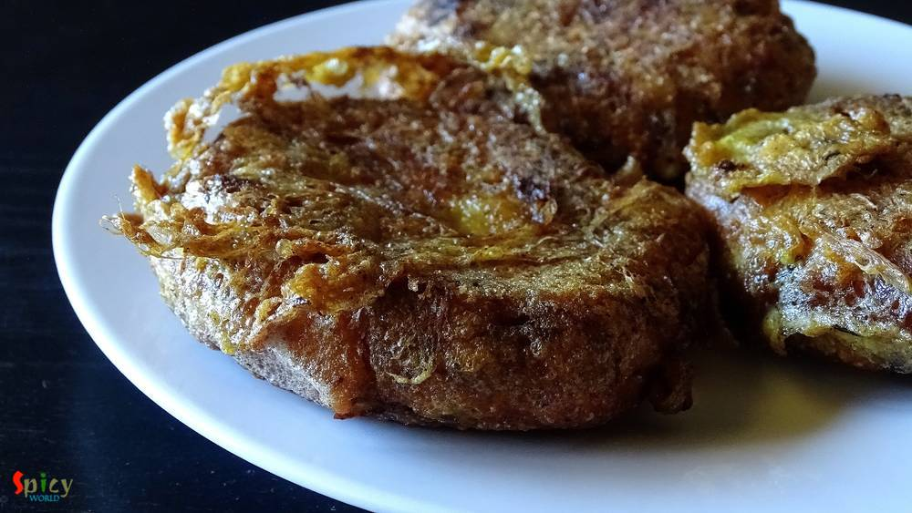
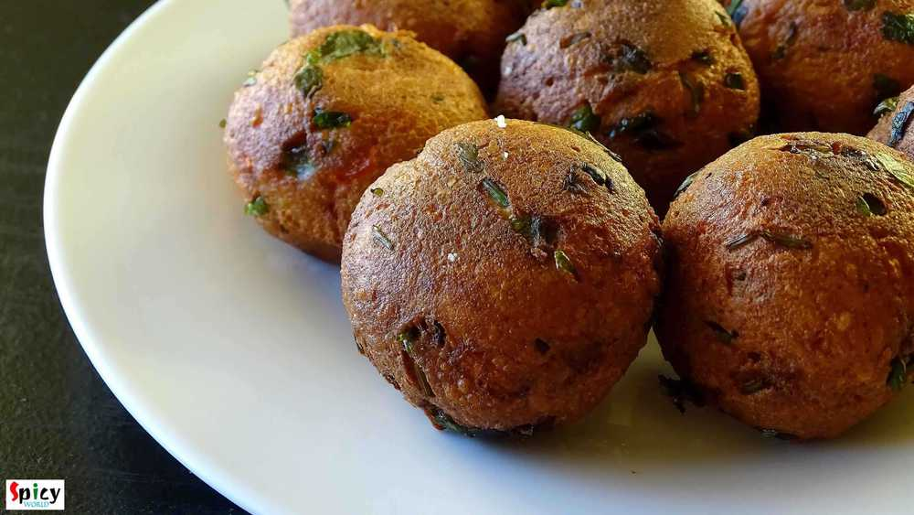

Simple and Easy Recipes


Nonveg Recipe
Dec 18, 2015
First let me thank Disha D'souza for this unique idea. 2-3 weeks ago in a facebook group I saw her unique post and really got inspired. Though I changed the name and recipe little bit (hope she won't mind), but the idea credit must go to Disha. Lots of love and thanks from 'spicy world' to her. Now lets talk about the dish. You can see this is a double colored chicken curry. I also maintain two di ...


Nonveg Recipe
Dec 17, 2015
Last week, from Monday to Friday, I was very lazy and didn't do much innovative cooking. We really got bored of eating usual meals. So, I thought to do something simple but new in the weekend. I had some boneless chicken and homemade tortillas in my kitchen. Suddenly planned to make some wraps. But then I was wondering about the flavour of the filling. 'He' suggested to give 'tandoori' flavour and ...

Veg Recipe
Dec 16, 2015
After coming to Texas I was familiar with the name of 'tortilla'. Here maxican food is very famous. 'Tortilla' plays a big role in mexican cuisin. They make various dishes with this tortilla and many of them tastes really delicious. With tortilla you can make 'taco', 'burrito', 'quesedilla', 'enchilada' etc. I really love each of them and that's why I want to make tortilla in my own kitchen. Usual ...
 / Kolaier Daal")
Veg Recipe
Dec 15, 2015
Soul food means the food which you can enjoy from the bottom of your heart while eating. Being a bengali I always face a common question- 'fish and posto(poppy seeds) are your soul food, right?'. And my answer is always 'oh, hell yaa' ... ? Today I will talk about vegetarian food. We always make 'biulir daal' / 'urad daal' with posto. The combo is nothing but heavenly. There is a must ingredient ...

Nonveg Recipe
Dec 14, 2015
Whenever 'he' returns from market and gives me a bag of mutton, it always brings an extra big smile on my face and a great joy in my heart. I guess, this happens to many of you also ?. I always try to do something new to my mutton curry, because you all know about my experimental nature!! This time I made 'khara masala mutton', the taste was heavenly. After finishing the meal, there were nothing ...

Nonveg Recipe
Dec 13, 2015
In India, 'mutton dopyaza' is a very frequently ordered dish in restaurants. 'Dopyaza' means double amount of onion. From this curry you will get juicy meat, thick gravy and some nice crunch of onions. You can make this curry with chicken and fish also. If you make this dish in any potluck or party, it will become the main attraction. I tried to keep the recipe very simple and easy. Just give it a ...
 Fried Rice")
Veg Recipe
Dec 12, 2015
I guess almost everybody love indo-chinese food. The recipe of this fried rice is also indo-chinese and homemade version. I heard from many foodies that in homemade fried rice, there is always lack of that chinese flavour / restaurant flavour. But after following this recipe, you will forget about this complain. You can serve various side dishes with this kind of 'fried rice'. Try this in your kit ...

Nonveg Recipe
Dec 11, 2015
I guess many people are not familiar with this name, believe me, I was also not. 'He' is a big fan of kababs, that's why I always try to find new recipes for kababs. This year, on his birthday, I made these 'jali' kababs. The concept and taste were totally new to us. But luckily 'net kabab' brought a big smile on his face and that was my real satisfaction. 'Jali' means net and they have net like t ...

Veg Recipe
Dec 10, 2015
Last weekend I wanted to make something new veg maincourse, thats why I chose this 'paneer kofta curry' and it was just delicious. You can make kofta curry with raw banana, jack fruit, chicken, fish, mutton etc. They all tastes really good. I made it with paneer kofta, you can see how good looking they are and by clicking the picture below you can see how it's prepared. I served this curry with pl ...

Veg Recipe
Dec 9, 2015
'Kofta' is a very flexible food item, you can serve them as starter or you can soak them in gravy and serve as maincourse also. This was my very first attempt on 'kofta' and from the beginning I was a bit nervous because I often heard that while frying them, kofta has a chance to break. But I carefully maintained the proportion of ingredients and taaddaaa ...!! All of my 'kofta's came out perfectl ...
Contact Us
Guest Post
Subscribe RSS Feed
User Agreement
Public Presence
Feedback
Free Games
Home
Recipes
Categories
Images
Food Plating
About Me
Guest Post
Subscribe RSS Feed
User Agreement
Public Presence
Feedback
Free Games
Home
Recipes
Categories
Images
Food Plating
About Me
What we offer?
- Recipe Development
- Restaurant & Food Review
- Food Photography
- Website, Blog & Application Development
- UX / UI Designing
- Sponsorship & Advertisement
Contact us via Email
contact@spicyworld.in
Who we Are?


Amitava Ghosh
Website & CMS Designer, Developer and Architect.
Website & CMS Designer, Developer and Architect.